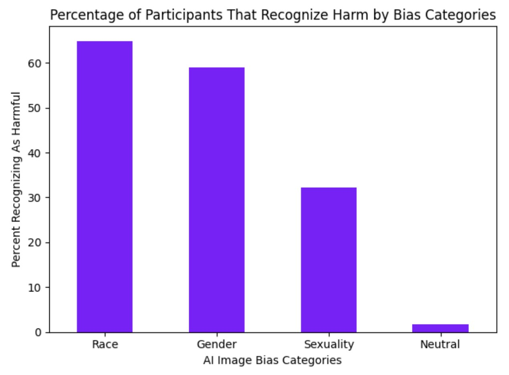
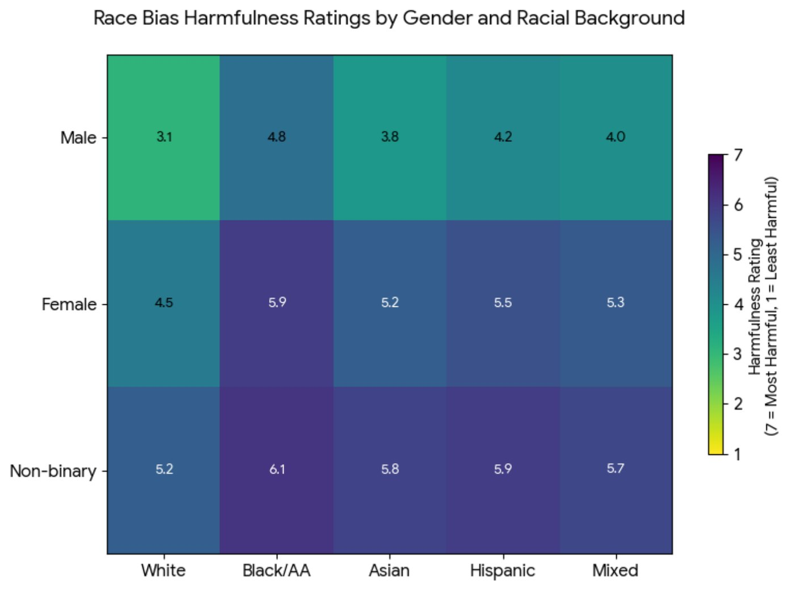
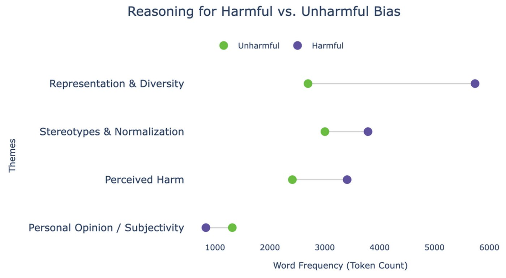

CMU MHCI • UCRE • Fall 2025
The Ethics of Meta: Everyday AI Auditing
Can ordinary people spot harmful behaviour in generative AI, and would they report it if they did? Our team started with Meta AI across Instagram, WhatsApp, Messenger and Quest, then tested that question on real data and a real auditing tool: CMU's WeAudit survey and its TAIGA platform.
When
Sep to Oct 2025
My role
Lead Researcher, team of 5
Methods
Background research • Data analysis • Heuristic evaluation • Usability testing
The question
This was Project 1 of User-Centered Research and Evaluation (05-610), "Learning From What Exists". We started broad, asking how Meta uses generative AI across its platforms, with a goal that stayed the same all project: how can we empower and incentivize everyday users to understand, identify and report harmful algorithmic behaviours?
- Sep 2025 Background research on Meta AI
- Sep 28 Data analysis report on the WeAudit bias survey
- Oct 2 to 5 Heuristic evaluation of WeAudit TAIGA, individual then as a team
- Oct 12 Usability testing: 10 moderated sessions and findings
1. Background research: living with Meta AI
Each of us did two hands-on sessions with Meta AI (celebrity and "mind reader" chatbots on Instagram, WhatsApp trip planning, Messenger text and image generation, meta.ai, and Meta AI on Quest) and five informational reviews of news, research, Reddit threads and Meta's own documentation. That added up to ten experiential sessions and more than twenty sources.
- The bots blur who is human. A "Justin Bieber" bot kept insisting it was the real person. A "Your Therapist" bot reported on Reddit claimed to be a licensed psychologist, complete with a fake licence number.
- Safety help is inconsistent. In our tests, crisis prompts were redirected to hotlines. In a Common Sense Media study with teen accounts, reported by the Washington Post, only about 1 in 5 harmful chats triggered any intervention.
- Privacy notices come late. WhatsApp told us Meta AI remembers chat details only after we had already shared some, and US users cannot opt out of their data being used for training.
- The outputs carry stereotypes. Asked to imagine doctors and nurses, Messenger AI showed mostly young men as doctors, women only as nurses, and little racial diversity. The only feedback option was a downvote with a short list of reasons.
- Policy and experience don't match. Meta documents labels, memory controls and safeguards, but in everyday use they were easy to miss and applied unevenly.
The thread through all of it: people can't report a harm they can't see, and the reporting tools that exist are too thin to capture what they do see.
2. Data analysis: who sees bias as harm?
Next we analysed survey data from WeAudit, a CMU HCII project, where participants rated how harmful AI-generated images were across race, gender and sexuality bias, then shared their demographics and their own experiences with discrimination. We built the analysis in Python (Pandas, NumPy, Plotly, Matplotlib in Google Colab).


- Lived experience matters. People who had faced discrimination rated every kind of bias as more harmful, most of all racial bias, and the differences were statistically significant.
- Representation is the main reason. Missing or excluded groups were the most common justification for calling an image harmful, with more than 5,000 mentions in the open-text answers.
- No partisan divide. Mapping mean scores by state, split by the 2020 election result and leaving out states with fewer than 20 participants, showed similar racial bias perception in Republican and Democratic states.

What it meant for the project: audits should prioritise race and gender, recruit diverse participants on purpose, and can frame racial bias as a shared concern rather than a polarising one.
3. Heuristic evaluation: WeAudit TAIGA
TAIGA is WeAudit's tool for the public to generate images with Stable Diffusion, compare outputs side by side and discuss bias in a forum. Each of us evaluated it against Nielsen's heuristics before we synthesised as a team. I focused on the discussion forum and on mobile, where content overflowed the screen and controls like reply buttons became hard to reach.
- Help and documentation: all five reviewers found nothing explaining how to prompt, compare or post.
- Consistency and standards: the Home link worked on some pages and not others.
- User control and freedom: a magnifier could trap you, and the prompt page had no way back.
- Error prevention: random characters still produced images, and new posts went up with no guidance.
The strengths were real too: clear loading feedback, saved prompt history and a clean layout.
4. Usability testing: 10 sessions
We ran 10 moderated, think-aloud sessions with adults who use AI tools but had never seen TAIGA, and I ran two of them. Each person scanned the homepage, generated single and compared images, found their way home, and replied in the forum. We then clustered the transcripts by theme.
- Critical: nobody could tell what the site was for. All 10 participants were confused about its purpose, and the confusion lasted the whole session.
- The compare tool was misread. Three thought it compared two AI models. Everyone typed prompts unrelated to bias (birds, dogs), and nobody commented on bias in the results.
- Navigation failed. The logo didn't go home for 7 of 10, the hamburger menu did nothing for 5, and 8 missed the "Go to discussion forum" button.
- Quality undercut trust. Six called the images scary, inaccurate or useless, which made the audit itself feel pointless.
- What worked: five praised how fast images appeared, and many said auditing AI is something the public should care about.
"I'm not sure, it doesn't really say what it's for; it just gives a place to type and generate something."
Our recommendations: global navigation with a working logo, a short optional walkthrough, "?" help beside Generate, Compare and Discuss, prompt inspiration shown by default, and a visible four-step flow (generate, analyse, give feedback, discuss).
What we learned
The project ended with a sharper answer about what everyday auditing needs:
- Agency needs usability. If people can't work the tool, they can't critique the AI.
- Agency needs a credible system. Bad outputs make auditing feel pointless.
- Agency needs a guided workflow. Without "what to do next", auditing becomes button-clicking.
- Responsiveness keeps people curious. Fast feedback kept participants experimenting.
- Plain language moves people. Participants wanted the site to talk about harm directly.
My role was Lead Researcher: guiding the research, finding sources for the team and helping analyse the data. The same course's second project became my Spotify vs AI study.
Team and credits
Team 10 (Justice League): Laila Dancy, Zeana El-Hajomar, Rabiat Sadiq, Rachael Shivam and Cameron Thompson. User-Centered Research and Evaluation, Carnegie Mellon University, Fall 2025, taught by Raelin Musuraca. Survey data: Shen, H. and the WeAudit team, Human-Computer Interaction Institute, Carnegie Mellon University.